Problem 02
One project became many separate floor plans
Every room became a separate floor plan, scattering rooms from the same project across the mobile list.

Multi-Room Scan let renovation pros add rooms to the same floor plan on mobile, instead of creating a separate plan after every scan.
Context
Houzz Pro's Room Scanner helps renovation professionals capture existing spaces on-site and turn them into editable floor plans using a phone or tablet. Instead of relying on manual measurements, sketches, and rebuilding the space later, pros can quickly document dimensions and room geometry, then continue refining the plan in 2D and 3D as part of the broader design workflow.
User voices
On site, they worked room by room, but mobile saved each scan separately and returned them to the list. Building one connected plan had to wait until they reached a computer.
I rarely have time to scan the whole property in one go.
Why do I have to go back to the list every time I finish a room?
I'm already on site with my phone...I shouldn't need a computer to keep building the plan
I need to see how the next room connects while I'm still in the space.
Users
Renovation pros capturing existing spaces on site.
JtbD
Capture a property room by room and keep the whole project together as one floor plan.
Problem 01
On mobile, each scan ended after one room and was saved as its own separate plan. Capturing another meant returning to the list and starting over.
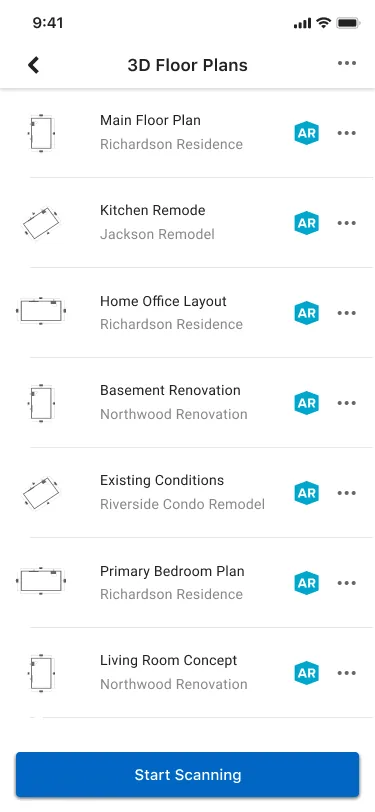
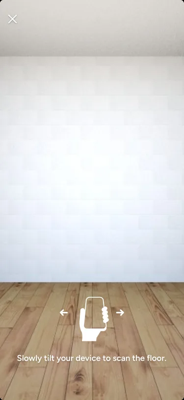
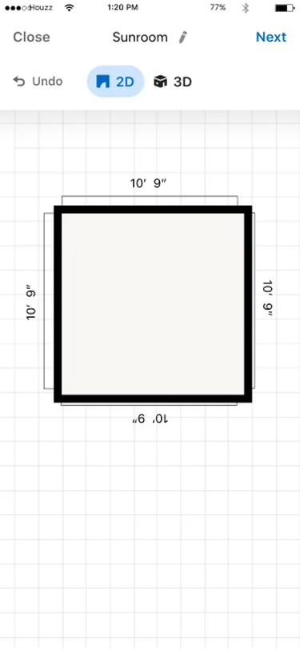
Problem 02
Every room became a separate floor plan, scattering rooms from the same project across the mobile list.
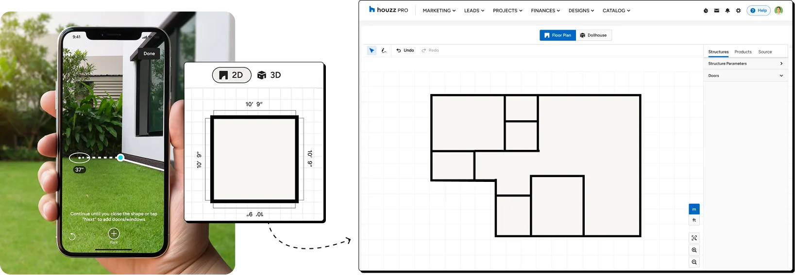
Problem 03
Mobile stopped after one room. Completing the property meant drawing the remaining rooms on desktop, or building the full plan there from the start.
The goal
Let pros move from room to room and build one connected floor plan directly on mobile.
The challenge
The app had to carry the scan from one room to the next and place every new room on the same shared map.
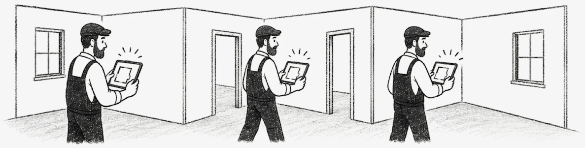
The technical constraint
We used the phone's location data to place each room on a shared map. When that reference drifted, the next room could land in the wrong position or break into a separate local scan.
Spatial data
We added a series of dialogs to guide pros from one room to the next while preserving the phone’s spatial data between scans. This gave the system the context it needed to position the rooms relative to one another, but every transition added another prompt, making the flow slow and interrupted.
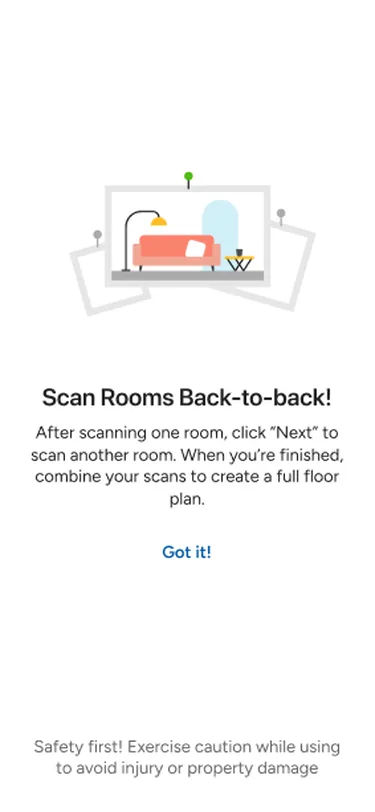
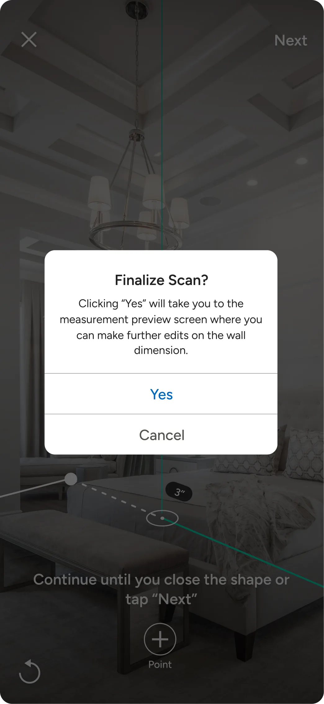
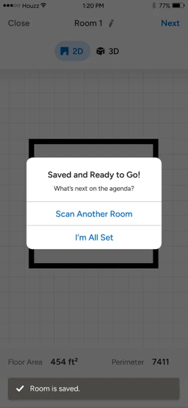

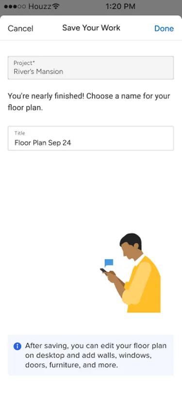

The result
The rooms now appeared in the same plan, but their positions were only approximate. Instead of connecting at shared walls and openings, they were scattered across the plan.
Manual controls
To make the layout usable, we gave pros controls to move, rotate, or remove each room, with a short tutorial showing them how to assemble the floor plan themselves.

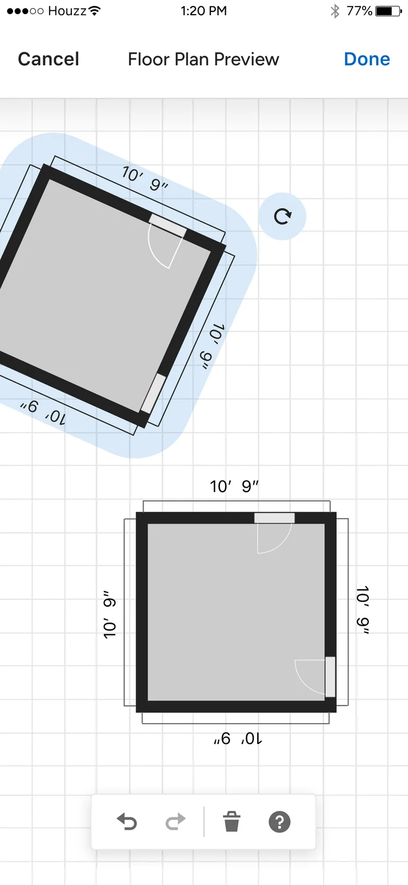
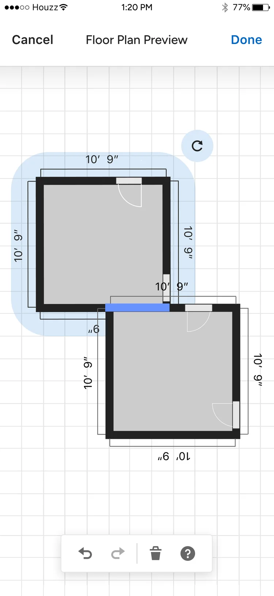
Turning point
Once engineering made room positioning reliable, the rooms could align and connect automatically. This allowed us to remove the manual correction flow and tutorial.
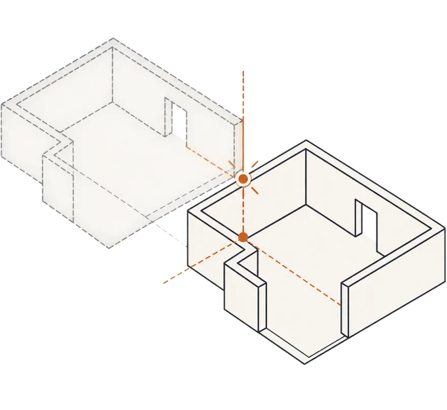
After
With the rooms now connecting automatically, pros only had to decide whether to scan another room or finish. One clear choice replaced the earlier chain of dialogs.
With room placement solved, I could focus on three parts of the experience:
01
Keep guidance inside the scan.
02
Let pros adjust details without leaving the flow.
03
Keep “Next Room” and “Finish” separate.
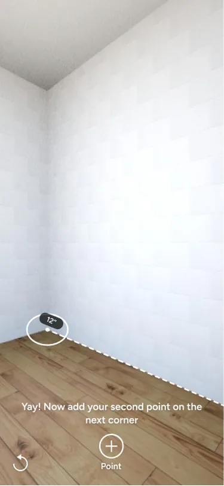
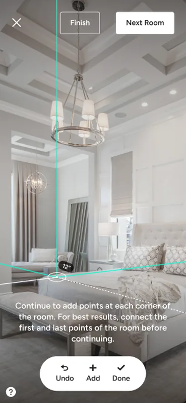
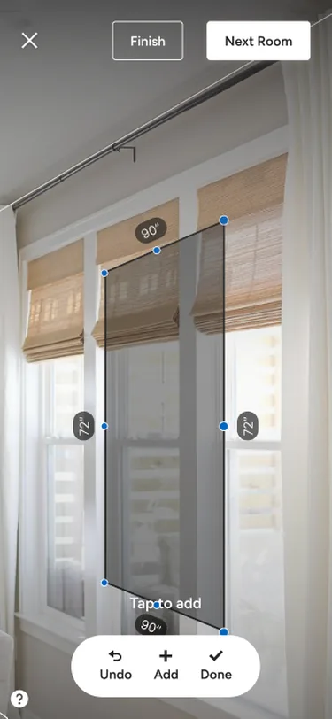
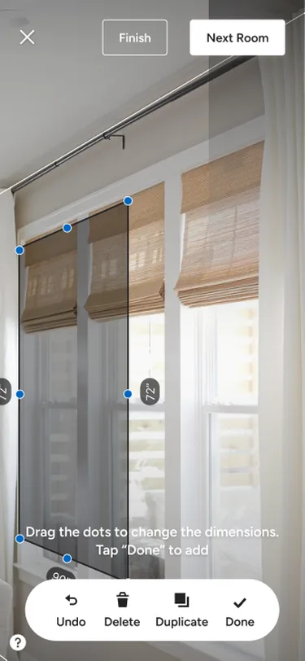
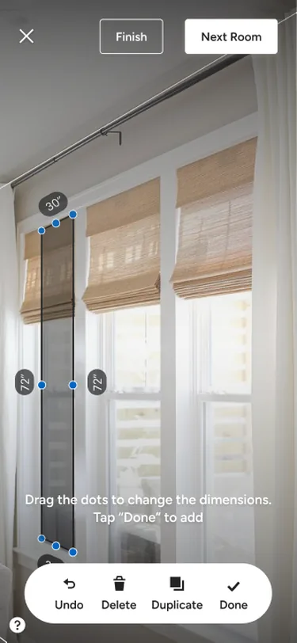
Once a door or window was added, the action bar switched to editing controls, so pros could position, resize, duplicate, or delete it without leaving the scan.
After completing a room, Next Room and Finish were visible in the scan instead of being hidden behind a series of dialogs.
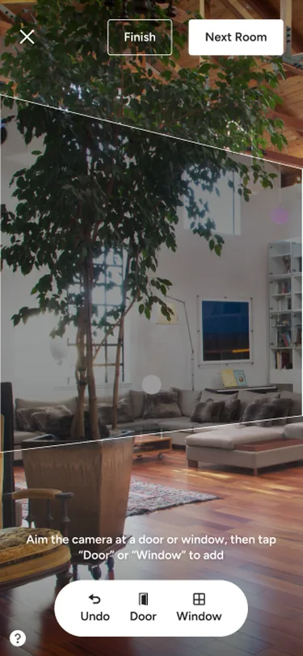
Before scanning, a one-time introduction explained the flow. At the end, pros named the floor plan and saved it directly to a project.
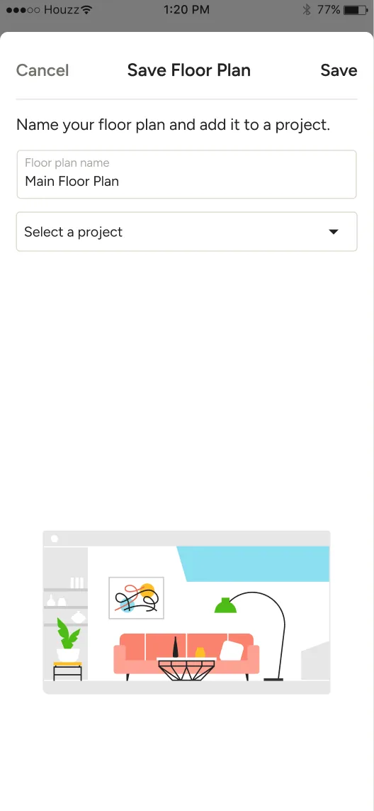
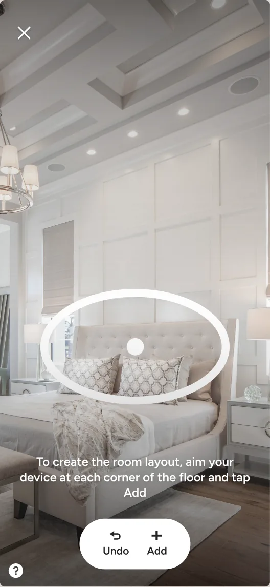
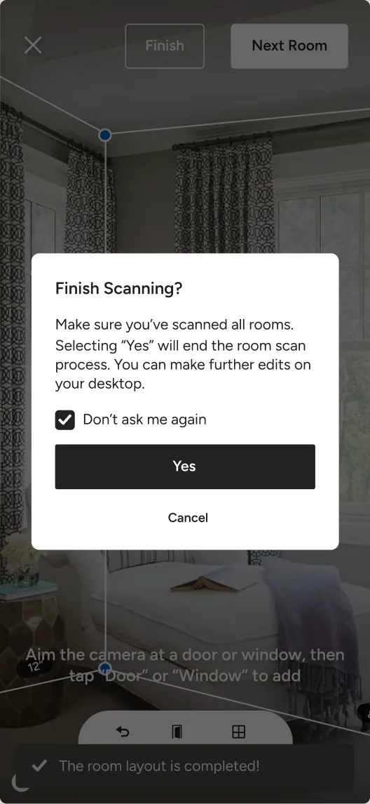
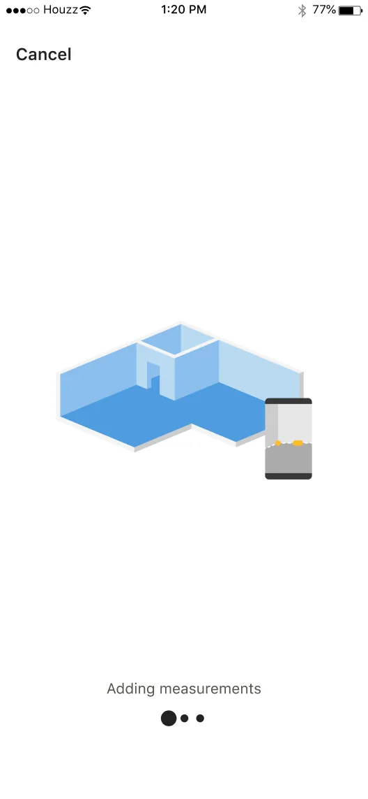
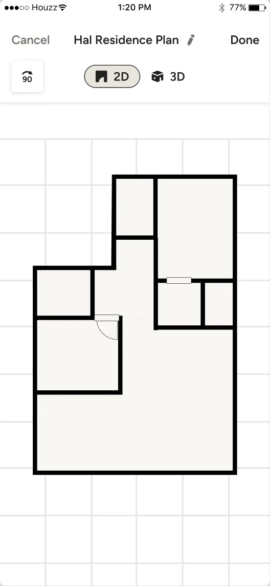
Pros could keep scanning room by room and build one connected plan, without returning to the list or switching to desktop.
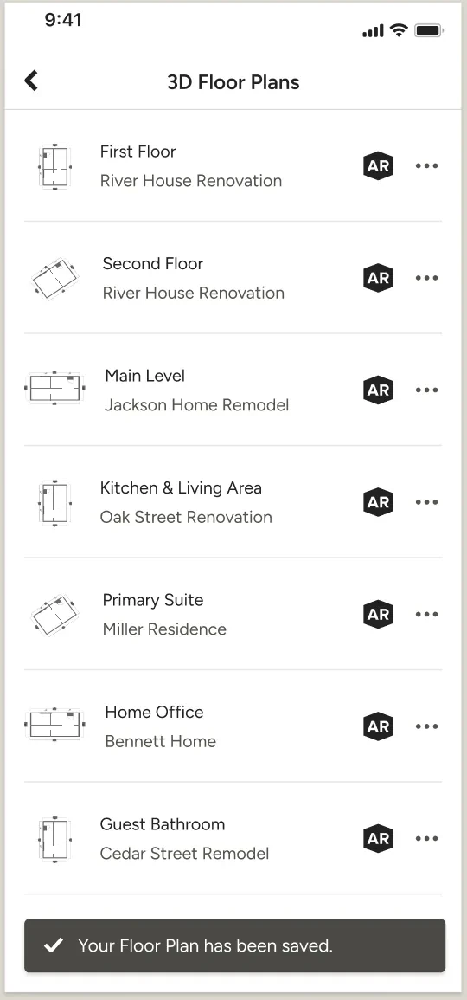
Testing in real spaces
Because the experience depended on physical rooms, I tested it repeatedly in real spaces throughout development. This surfaced edge cases early, while there was still time to work through them with the engineering team.
Impact
As 3D Floor Plans grew, 22% of floor plans were created through multi-room scan, with around 230 room-to-room continuations each day.
10×
3D Floor Plans monthly active users over four years
22%
of floor plans created through multi-room scan
~230/day
room-to-room continuation events
Also on capture
Houzz Pro also added LiDAR scanning on the devices that supported it. Apple's framework handled the scan itself. My part was everything around it: where it started, what pros saw while the walls were built, and how a finished scan landed in the same floor plan they would go on to edit. Devices without LiDAR stayed on the manual flow, so both routes had to arrive at the same place.
How to scan a room with LiDAR, Houzz Pro ↗Building Multi-Room Scan sharpened how I approach complex workflows:
01
Users were capturing projects, not isolated rooms. The product needed to reflect that.
02
The biggest UX improvement came from fixing alignment, not teaching users how to repair it.
03
When the underlying problem is solved, the interface built around it should disappear.